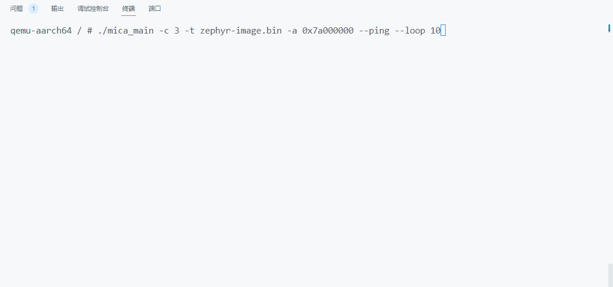

性能测试¶
简介¶
目前社区提供的通信方案有两种：一种是通过自定义服务，即使用自定义的endpoint来进行通信，另一种是基于社区提供的pty服务进行消息传递。为了比较两种通信方案之间的性能差异并评估它们的相对优劣，针对不同通信方案进行了一系列测试，包括ping测试（长短消息延时）和带宽测试。为MCS设计了一套Benchmark，可以测试Client os的性能基线，可以帮助用户观测MCS的通信框架。Benchamrk的测试流程如图1所示，其包含的功能主要如下:
基于自定义endpoint通信的Ping和长消息延时测试。
基于/dev/pts/x的Ping延时和带宽速率测试。
图1. benchmark测试流程¶
测试流程¶
1. 编译和运行程序¶
根据openEuler Embedded使用手册安装SDK并设置SDK环境变量。
将混合关键系统的git代码下载到本地，进入到mcs目录：
git clone https://gitee.com/openeuler/mcs.git cd mcs
编译mica_main、pty_test，编译方式如下:
#cmake前记得source一下sdk，否则可能编译报错 cmake -S . -B build -DDEMO_TARGET=benchmark_demo cd build make这将会编译mcs目录下的benchmark_demo相关代码，并在build目录下得到两个可执行文件: mica_main、pty_test，需要在openEuler Embedded环境下运行。
2. 基于自定义endpoint的通信测试¶
运行mica_main程序有以下参数可以设定：
--ping:测试ping延时，ping消息长度为32 Bytes。--long-ping:测试长消息的延时，默认长消息的大小为4K Bytes。--loop:指定测试的次数可以和ping或long-ping结合使用。#插入内核模块 modprobe mcs_km.ko #以下命令为，运行mica_main程序，测试ping延时10次 ./mica_main -c 3 -t zephyr-image.bin -a 0x7a000000 --ping --loop 10 #以下命令为，运行mica_main程序，测试long-ping延时10次 ./mica_main -c 3 -t zephyr-image.bin -a 0x7a000000 --long-ping --loop 10基于自定义endpoint通信的Ping延时与长消息延时测试可以帮助评估两个系统之间的通信性能。低Ping延时通常意味着更快的响应时间，这对于需要快速交互的应用程序至关重要。这个测试帮助我们了解在即时场景下通信框架的性能，测试过程如图2所示：
图2. ping测试流程图¶
如果运行成功有类似如下打印，最后一行输出就是实时测试结果。
... found matched endpoint, creating pty-ping with id:3 in host os found matched endpoint, creating rpc-ping with id:1 in host os found matched endpoint, creating rpc-long-ping with id:2 in host os ... Policy: ping_msg. Reply from remote os: Count: 23 Realtime: 1339μs Min: 326μs Avg: 1274μs Max: 3578μs
下图为ping测试的演示GIF图，如果不指定loop参数则会一直进行测试，直到ctrl+c退出。long-ping的测试与ping同理，在此不再展示。
 图3. ping测试演示GIF¶
3. 基于虚拟终端的通信测试¶
基于虚拟终端的通信测试需要在运行mica_main的时候指定参数pty，成功运行mica_main程序后，可以看到类似如下的输出：
#插入内核模块 modprobe mcs_km.ko #以下命令为，运行mica_main程序，启动虚拟终端服务 ./mica_main -c 3 -t zephyr-image.bin -a 0x7a000000 --pty ... pty master fd is :4 pls open /dev/pts/0 to test pty pty_thread for pty-ping is runnning ... found matched endpoint, creating pty-ping with id:3 in host os ...
保持mica_main程序运行，另起一个终端，运行之前生成生成的pty_test可执行文件，即可测试：
pyt_test需要指定以下参数才可以正常运行：
--path:虚拟终端的路径，必须指定。--ping:测试ping延时。--loop:指定测试的次数可以和ping结合使用。--bandwidth:测试带宽速率。--time:指定带宽测试的持续时间。其中
ping和bandwidth参数如果同时指定会测试ping不会测试bandwidth，path参数必须指定否则找不到虚拟终端的位置。
基于虚拟终端的测试命令如下:
$ ./pty_test /dev/pts/x # 指定虚拟终端设备为/dev/pts/1，进行带宽测试，测试时间持续20s $ ./pty_test --path /dev/pts/0 --bandwidth Waiting for senconds, Testing communication bandwidth... Count: 30 | Elapsed: 210.00 milliseconds | Min: 0.02 Mbps | realtime: 0.12 Mbps | Avg: 0.18 Mbps | Max: 2.02 Mbpss 221184 Bytes was written! bandwidth test over! # 指定虚拟终端设备为/dev/pts/1，进行Ping测试，测试次数10次 $ ./pty_test --path /dev/pts/0 --ping --loop 10 Count: 10 | Realtime: 384μs | Min: 121μs | Avg: 1271μs | Max: 4497μs ping test over!
基于虚拟终端的测试，与基于自定义endpoint服务通信类似。只不过读写对象从endpoint变成了screen下的/dev/pts/x，用户通过对screen进行写数据，随后消息传送到对应的虚拟终端文件，随后有对应pty_thread处理数据，将数据发送给zephyr，zephyr回传数据给linux，pty_endpoint_cb接收到数据在传递给虚拟终端，最后打印到screen上与用户进行交互。其中bandwidth的测试流程如图2所示，ping测试流程可参考图2。
图4. bandwidth测试过程¶
基于虚拟终端ping与bandwidth测试演示GIF如下：
为其它的client os适配 benchmark¶
1. 消息结构¶
// long-ping消息结构 struct _large_msg { unsigned long flag; // 用于标注是否是最后一个数据包 unsigned long data[]; // 实际的数据，需要填充为2023 }; // ping消息结构 struct _payload{ unsigned long num; // 数据包的序号 unsigned long size; // 数据包的大小 unsigned long data[]; // 实际的数据，需要填充为2023 };
2. 初始化对应的endpoint¶
// benchmark的通信需要3个与linux端对应的endpoint #define BENCHMARK_RPC_PING "rpc-ping" // 用于ping测试 #define BENCHMARK_RPC_LONG_PING "rpc-long-ping" // 用于long-ping 测试 #define BENCHMARK_PTY_PING "pty-ping" // 用于虚拟终端的测试
3. endpoint对应的callback实现¶
// ping callback static int benchmark_rpc_ping_cb(struct rpmsg_endpoint *ept, void *data, size_t len, uint32_t src, void *priv) { int ret; // 接受到的数据转换为ping消息格式 struct _payload *msg = (struct _payload *)data; //验证数据是否是2023 for (int i = 0; i < 4; i++) { if (msg->data[i] != 2023) return 1; } ret = rpmsg_service_send(rpc_ping_id, data, len); return 0; } // long-ping callback static int benchmark_rpc_long_ping_cb(struct rpmsg_endpoint *ept, void *data, size_t len, uint32_t src, void *priv) { int ret; // 接受到的数据转换为long-ping消息格式 struct _large_msg *msg = (struct _large_msg *)data; // 验证数据是否是2023 for (int i = 0; i < 59; i++) { if (msg->data[i]!= 2023) return 1; } ret = rpmsg_service_send(rpc_long_ping_id, data, len); return 0; } // pty callback static int pty_ping_cb(struct rpmsg_endpoint *ept, void *data, size_t len, uint32_t src, void *priv) { int ret; // 基于虚拟终端的通信直接将数据进行转发，不做验证 ret = rpmsg_service_send(pty_ping_ep_id, (char *)data, len); if (ret < 0) { LOG_ERR("rpmsh send error\n"); } return 0; }
4. 服务初始化¶
int benchmark_rpc_service_init() { int ret; // 初始化ping服务，rpc_ping_id 是一个int类型的数字用于记录endpoint的id ret = rpmsg_service_register_endpoint(BENCHMARK_RPC_PING, benchmark_rpc_ping_cb, NULL, &rpc_ping_id); if (ret >= 0) { rpc_ping_id = ret; } else return ret; // 初始化long-ping服务 ret = rpmsg_service_register_endpoint(BENCHMARK_RPC_LONG_PING, benchmark_rpc_long_ping_cb, NULL, &rpc_long_ping_id); if (ret >= 0) { rpc_long_ping_id = ret; return 0; } else return ret; } int pty_ping_service_init() { int ret; // 初始化pty服务 ret = rpmsg_service_register_endpoint(BENCHMARK_PTY_PING, pty_ping_cb, NULL,&pty_ping_ep_id); if (ret >= 0) { pty_ping_ep_id = ret; return 0; } else { return ret; } } // 向内核发送消息进行初始化 SYS_INIT(benchmark_rpc_service_init, POST_KERNEL, CONFIG_RPMSG_SERVICE_EP_REG_PRIORITY); SYS_INIT(pty_ping_service_init, POST_KERNEL, CONFIG_RPMSG_SERVICE_EP_REG_PRIORITY);